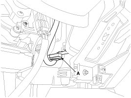
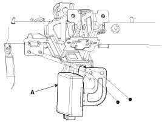
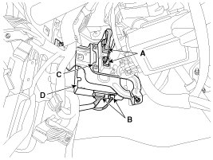

Repair Procedures
Removal
[200W]
1. Disconnect the battery negative (-) cable.
2. Remove the crash pad lower panel.
3. Disconnect the DC/DC converter connector (A).

4. Remove the DC/DC converter (A).

[400W]
1. Disconnect the battery negative (-) cable.
2. Remove the crash pad lower panel.
3. Disconnect the oil pump unit connector (A) and the DC/DC converter connector (B).
4. Remove the oil pump unit (C) and the DC/DC converter (D).

Installation
1. Install in the reverse order of removal.
NOTE:
If the battery negative (-) cable is reconnected after disconnecting, the ISG function does not operates until the system is stabilized for about 4 hours.